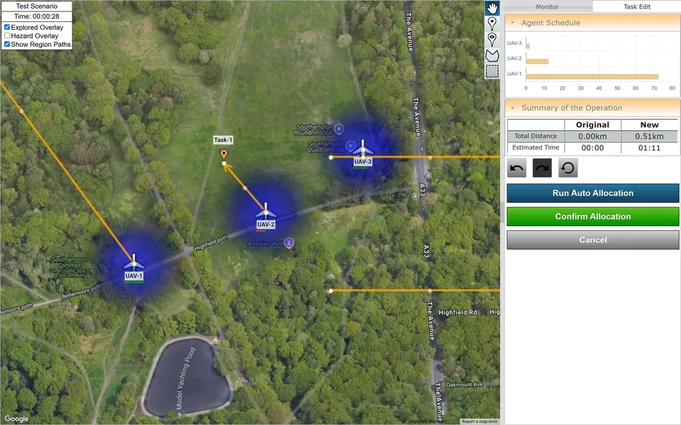

Free play
Sandbox
Build your own mission
Start from an empty map. Place drones and tasks, then allocate them by hand or let the allocator do it.
No scenario file
Each scenario shows a HARIS feature from published human–swarm interaction research. Pick one to launch it, or open the sandbox to build your own mission.

Free play
Build your own mission
Start from an empty map. Place drones and tasks, then allocate them by hand or let the allocator do it.
Looking for a study condition or a test mission? Every file in web/scenarios is listed here.